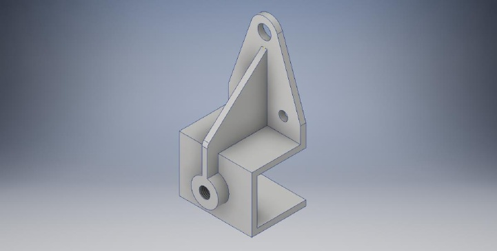
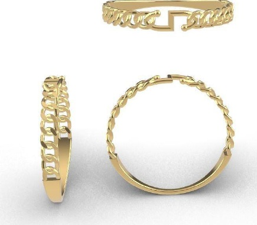
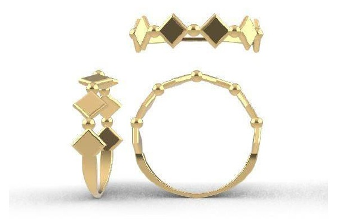
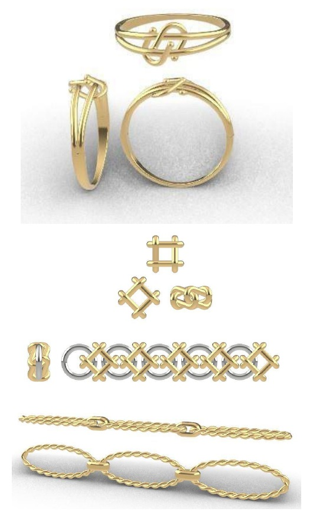
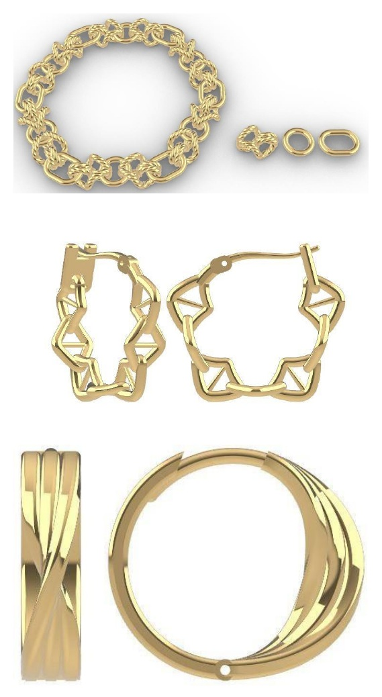

CAD & Design
- AutoCAD
- Autodesk Inventor
- Rhino
- 2D Drafting
- 3D Modeling
I’m Taufiqurrahman Ermaya, an Industrial Engineering graduate with experience in 3D CAD design, technical documentation, and manufacturing-oriented design workflows.

Curiosity, attention to detail, and a practical understanding of production guide the way I approach design work.
I am an Industrial Engineering graduate from Universitas Muhammadiyah Bandung, with hands-on experience as a 3D CAD Designer and internship exposure to industrial equipment maintenance.
My experience includes developing 3D models from technical drawings, product references, and manual sketches; revising designs for 3D printing and production needs; and organizing design files for engineering workflows.
A combination of CAD-focused tools and industrial engineering knowledge.
Software and skills are listed based on the supplied CV and portfolio. Individual project software has not been specified.
Professional and academic experiences that have shaped my engineering perspective.
GPA: 3.15 / 4.00
Final score: 89
A selection of original 3D visualizations from my supplied drawing portfolio. Select a project to view more.
The supplied portfolio also includes jewelry design studies. They are presented separately from the mechanical component work.




Note: The supplied portfolio does not identify the specific software used for each individual model or provide dimensions, materials, tolerances, or 2D manufacturing drawings. These details are therefore not assumed here.
Download my resume and the PDF version of my portfolio.
I’m open to opportunities where I can contribute, learn, and grow in CAD design and engineering.
Bandung, West Java, Indonesia
Let’s talk ↗